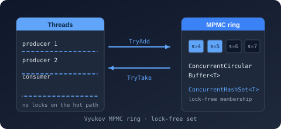
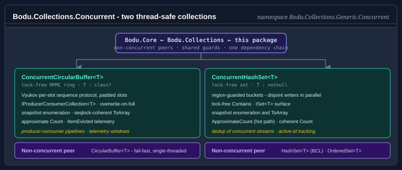

Bodu.Collections.Concurrent

Bodu.Collections.Concurrent ships the thread-safe members of the Bodu collection catalogue - the lock-free ConcurrentCircularBuffer<T>, the lock-free split-ordered ConcurrentHashSet<T>, and two bounded caches: the lock-striped ConcurrentEvictingDictionary<TKey,TValue> and the read-optimized ConcurrentLruCache<TKey,TValue> - as a focused companion package in the Core Foundations topic. The dependency chain is Bodu.Core ← Bodu.Collections ← Bodu.Collections.Concurrent: this package references Bodu.Collections (and through it Bodu.Core), so installing it brings the whole family. The namespace is unchanged from the original split - every type lives in Bodu.Collections.Generic.Concurrent.
Reach for this package when the same collection is accessed by multiple producers and consumers and you need predictable concurrent semantics rather than an external lock. External locking around CircularBuffer<T>, HashSet<T>, or EvictingDictionary<TKey,TValue> works, but it serialises every operation behind a single monitor; the concurrent variants coordinate more finely - per-slot sequence numbers (Vyukov MPMC) for the buffer, a lock-free split-ordered list for the set, and independently locked policy segments (lock striping) for the cache - so disjoint operations proceed in parallel.

Namespaces and headline types
Bodu.Collections.Generic.Concurrent
| Type | Purpose |
|---|---|
| ConcurrentCircularBuffer<T> | Thread-safe variant of CircularBuffer<T>: a lock-free multi-producer / multi-consumer ring over the Vyukov per-slot sequence protocol, implementing IProducerConsumerCollection<T> with the same overwrite-on-full semantics as its single-threaded peer. Reference types only (T : class?). |
| ConcurrentHashSet<T> | Thread-safe unordered set of unique elements backed by a lock-free split-ordered list: elements live in one Harris-Michael lock-free linked list keyed by bit-reversed hashes, so every operation is lock-free and growth never rehashes a node. Implements ISet<T>; elements must be non-null (T : notnull). |
| ConcurrentEvictingDictionary<TKey, TValue> | Thread-safe variant of EvictingDictionary<TKey, TValue>: a fixed-capacity bounded cache over lock-striped segments supporting all six eviction policies (FIFO / LRU / LFU / MRU / SecondChance / Random), optional TTL expiry, single-flight GetOrAdd, and a post-commit ItemEvicted event. Eviction order is exact per segment, approximate globally; keys must be non-null (TKey : notnull). |
| ConcurrentLruCache<TKey, TValue> | Read-optimized fixed-capacity cache with lock-free reads and a segmented pseudo-LRU policy (hot / warm / cold queues), with queue maintenance amortized onto writers and striped hit/miss telemetry. No TTL and no policy choice, GetOrAdd is not single-flight, and Count may transiently exceed Capacity by at most the number of in-flight writers; keys must be non-null (TKey : notnull). |
Scenarios this library covers
| Scenario | Reach for |
|---|---|
| Fixed-capacity FIFO ring buffer shared by multiple threads | ConcurrentCircularBuffer<T> |
Producer-consumer queue (optionally behind BlockingCollection<T>) |
ConcurrentCircularBuffer<T> via IProducerConsumerCollection<T> |
| Bounded telemetry / recent-items window under concurrent writers | ConcurrentCircularBuffer<T> with AllowOverwrite = true |
| Thread-safe set of active correlation ids, dedup of a concurrent stream | ConcurrentHashSet<T> |
| Read-heavy membership tests that must never block writers | ConcurrentHashSet<T> (Contains is lock-free) |
| Bounded in-process cache (LRU / LFU / TTL) shared by request threads | ConcurrentEvictingDictionary<TKey, TValue> |
| Cache-stampede protection - expensive value built at most once per key | ConcurrentEvictingDictionary<TKey, TValue> (GetOrAdd runs the factory single-flight per key) |
| Read-heavy bounded cache where lookups must not take a lock | ConcurrentLruCache<TKey, TValue> (approximate LRU, no TTL) |
Design notes
- Lock-free ring and set, lock-striped cache. The buffer coordinates producers and consumers with per-slot sequence numbers (CAS updates, 64-byte cache-line padding against false sharing); the set applies single-CAS mutations to a split-ordered list - neither takes a
lockanywhere, so a preempted thread can never stall the others. The cache stripes its capacity across independently locked policy segments, so only same-segment writers contend. - Snapshot enumeration, never fail-fast. Every type enumerates without ever throwing on concurrent modification - the deliberate inverse of the fail-fast contract on the single-threaded catalogue, because a fail-fast version token cannot be maintained without a lock. The buffer and the cache capture coherent snapshots; the set performs a weakly consistent lock-free traversal.
- Approximate reads are named as such.
Counton the buffer is a point-in-time estimate that never blocks; the set'sCountis a lock-free interlocked counter that is exact at quiescence; the cache'sApproximateCountsums per-segment counters lock-free while its exactCountacquires every segment lock for a coherent answer. Choose by need, not by habit. - Eviction under contention. With
AllowOverwrite = true, a producer that finds the buffer full silently overwrites the oldest entry and raisesItemEvictedafterwards; the evicting dictionary raises the same post-commitItemEvictedafter releasing its segment lock. In both cases handler exceptions are swallowed and there is no pre-eviction veto - a committed concurrent eviction cannot be unwound. See concepts for the contrast with the single-threaded event contracts. - Exact per segment, approximate globally. The evicting dictionary runs its policy exactly within each segment over a fixed slice of the capacity (slices sum to
Capacityexactly), so global eviction order is approximate while the capacity bound stays strict - the standard trade of production concurrent caches. SyncRootthrows. Matching the BCLConcurrentQueue<T>, the explicitICollection.SyncRooton every type throws NotSupportedException - there is nothing meaningful to lock on.
Where to go next
- Core concepts - the concurrency vocabulary: MPMC rings, split-ordered hashing, snapshot enumeration, counting under concurrency.
- Getting started - install the package and run a minimal sample for each type.
- Concurrent collections guide - the full walk-through: construction, consistency table, bulk operations, when not to use these types.
- Bodu.Collections.Generic.Concurrent API reference - full namespace overview.
- Bodu.Collections introduction - the single-threaded catalogue this package extends.
- Core Foundations topic - how the three packages fit together.